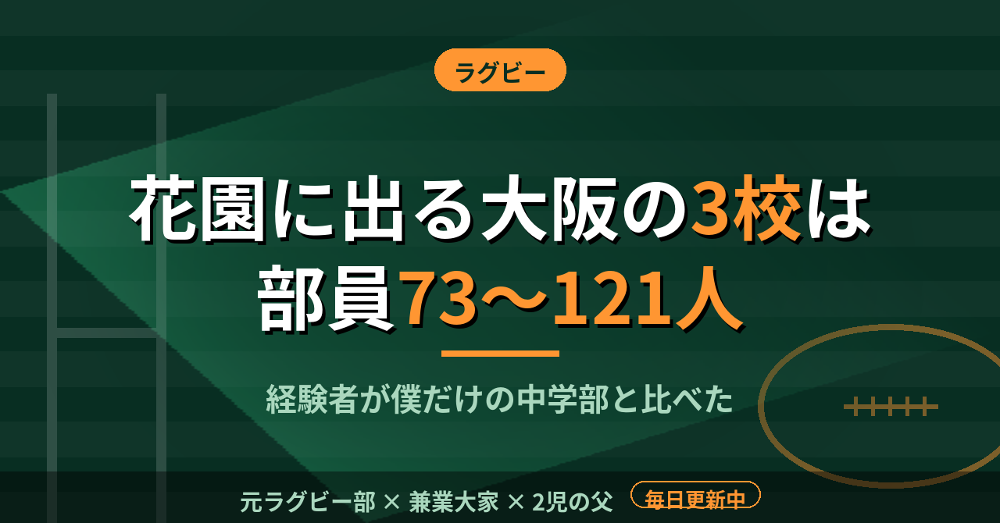

ラグビー花園に出る大阪の3校は部員73〜121人。経験者が自分だけの中学部で始めた僕が数えた
中学のラグビー部に入ったとき、経験者は僕しかいなかった。ラグビーは1チーム15人でやる競技だ。人数を揃えること自体が、最初の課題だったと記憶している。
その感覚のまま花園の出場校の部員数を調べて、数字の差に驚いた。
花園に出る大阪の3校は73〜121人
部員数のランキングを載せているサイトによると、前回の第105回大会に出た大阪の3校は、東海大大阪仰星が121人、常翔学園が100人、大阪桐蔭が73人だった。仰星は全体の2位、常翔学園は6位という並びである。
15人制のラグビーは、1チームが15人だ。121人なら、チームがほぼ8つ作れる計算になる。73人の大阪桐蔭でも、5つ近く作れる。試合に出る15人の背後に、同じ数の控えが何組も控えていることになる。
部員数の数字を見て、最初に浮かんだのは人数そのものの重さではなかった。121人の部員は、全員が同じ日に同じグラウンドを使えるわけではない。練習の組み方、グラウンドの割り振り、学年ごとの役割分担。人数が増えるほど、運営の仕事も増える。選手として見ていた頃は、そこまで考えたことがなかった。
なお、これは学校側の公式発表ではなく、ランキングサイトの掲載値である。数字の細部は大会ごとに変わるので、あくまで目安として読んでほしい。
51代表のうち、大阪は3枠
同じサイトによると、第106回の全国高校ラグビー大会は2026年12月27日に開幕し、決勝は2027年1月7日に花園ラグビー場で行われる。出場は全国51代表で、大阪は3枠だ。
つまり、121人や100人の部員を抱える学校の中から、さらに大阪の予選を勝った3校だけが花園に立てる。人数が多いこと自体が強さの条件ではない。ただ、人数が多い学校ほど、日々の練習で相手になる同じ学年の選手が多い。僕が経験者ひとりの環境で過ごした中学の頃と、そこは決定的に違う。
人数が少ない環境で身についたこと
経験者が自分だけだった中学では、パスを受ける相手の動きを、まず自分が言葉にして伝える必要があった。教わる側であると同時に、教える側でもあった。この立ち位置は、人数の多い強豪校では経験しにくいものだと思う。どちらが良いと言いたいわけではない。ただ、数字を見るたびに、中学の頃の練習の景色が思い出される。
大阪の高校で6年過ごした僕は、人数の多い環境と少ない環境の両方を見てきた。人数が少ない環境では、ひとりが複数の役割を覚える必要がある。SOで始めた僕が、のちにCTBやユーティリティとして出ることになったのも、その延長にある気がしている。
もちろん、人数の多い環境が持つ競争は、少ない環境では経験できない。同じポジションに同期が何人もいる緊張感は、数字を見ただけでも想像がつく。
人数が多いか少ないかで、ラグビーの面白さが変わるわけではない。どの環境にも、その環境でしか身につかないものがある。
今年の花園は、12月27日に始まる。部員の数ではなく、グラウンドに立つ15人の動きを見に行きたい。
この記事は note にも掲載しています。